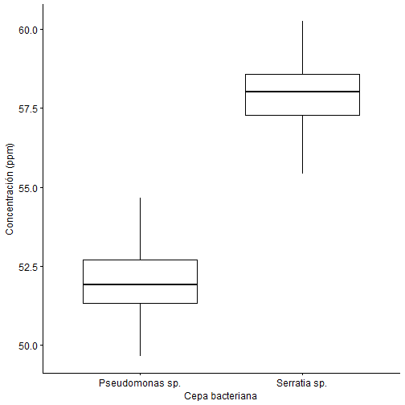
Análisis de Varianza
Diseño de Experimentos
Carlos Neftaly Lozano A., Msc
www.microbiostats.com
Comparando dos grupos...
Introducción
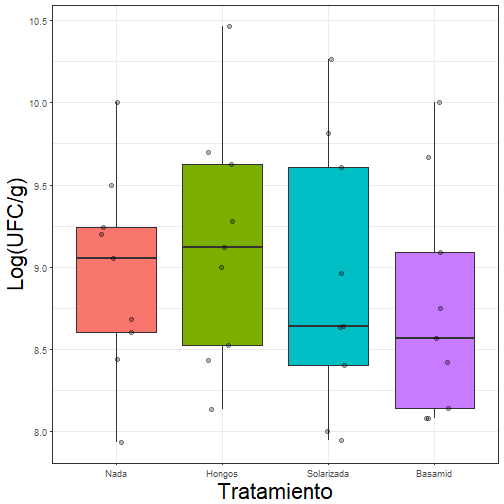
ANOVA unifactorial o de una vía
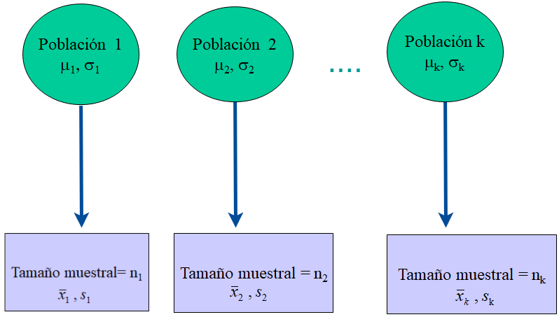
ANOVA unifactorial: Cuantitativa vs. categórica
Se refiere a una clase de muestreo o diseños experimentales, en los cuales la variable predictora o explicativa es categórica y la variable respuesta es continua.
ANOVA unifactorial
Se fundamenta en la descomposición de la variación de una variable respuesta \(\bar{Y}\), entre la varainza explicada y no explicada por uno o varios factores.
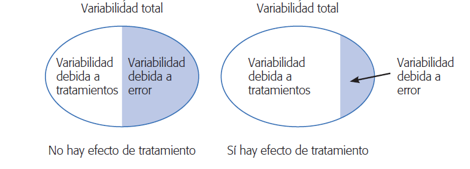
ANOVA unifactorial: Objetivo
El ANOVA tiene como objetivos centrales:
Examinar la contribución relativa de cada una de las fuentes de variación, a la variabilidad total de \(\bar{y}\).
Probar la hipótesis nula \((H_0)\), que la media de los grupos o tratamientos son iguales.
ANOVA: Una perspectiva gráfica
Cuando analizamos los datos usando análisis de varianza, el primer paso es poner a prueba la hipótesis nula global:
\[ H_0: \mu_1 = \mu_2 = \mu_3= .. \mu_I\] contra
\[ H_a: \text{al menos una media difiere} \]
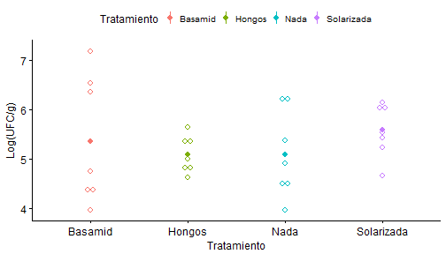
ANOVA
- Comparamos la variación dentro de cada grupo con la obtenidad entre cada grupo para evaluar si existen diferencias significativas en las medias poblacionales.
- Por lo tanto, al comparar estas dos medidas de varianza entre sí, podemos detectar si hay verdaderas diferencias entre las medias de la población.
ANOVA: Comparando varianzas
Si la varianza entre grupos es similar a la dentro de los grupos:
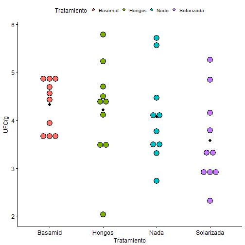
ANOVA: Comparando varianzas
Si la varianza entre grupos es similar a la dentro de los grupos:
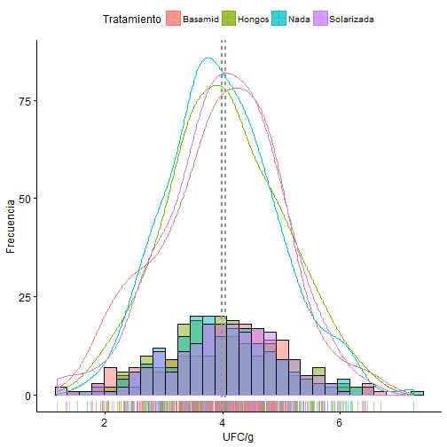
ANOVA: Comparando varianzas
Si la varianza entre grupos es mucho mayor que la dentro de los grupos:
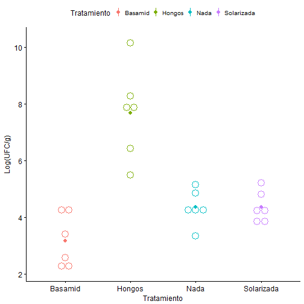
ANOVA: Comparando varianzas
Si la varianza entre grupos es mucho mayor que la dentro de los grupos:
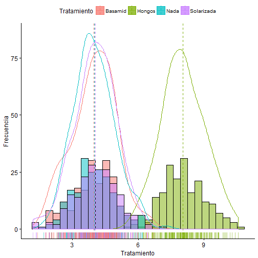
ANOVA: Particionando la varianza....
El ANOVA está construido sobre el concepto de partición de la suma de cuadrados. La variación total en un conjunto de datos puede ser expresada como suma de cuadarados (SS): La diferencia entre cada observación \((Y_i)\) y la gran media de los datos (\(\bar{Y}\)) elevado al cuadrado y sumado.
\[\underbrace{Y_{ij}}_{Respuesta} = \underbrace{\bar{\mu}}_{\text{Media global}} + \underbrace{\tau_i}_{\text{Efecto del tto}} + \underbrace{e_{ij}}_{\text{Error aleatorio}} \]
\[ SS_{total}= SS_{factor}+ SS_{error} \]
Notación....
- \(N\): número total de observaciones.
- \(i\): número de grupos.
- \(\bar{y}\): media general 'gran media'.
Cada grupo \(i\) tiene:
- \(n_i\): número de observaciones en el grupo \(i\).
- \(y_{ij}\) = observación \(j\) en el grupo \(i\).
- \(\bar{y}_i\): media del grupo \(i\).
- \(s_i\): Desviación de estándar en el grupo \(i\).
ANOVA: Suma de cuadrados totales
\[SS_{total}=\sum_{i=1}^{a} \sum_{j=1}^{n} (Y_{ij} - \bar{Y})^2 \]
Siendo, \(i\) = 1 hasta a tratamientos ; \(j\)= 1 hasta n réplicas.
Refleja la desviación de cada observación de la 'gran media'.
ANOVA: Suma de cuadrados entre grupos
\[SS_{factor}=\sum_{i=1}^{a} \sum_{j=1}^{n} (\bar{Y}_{i} - \bar{Y})^2 \]
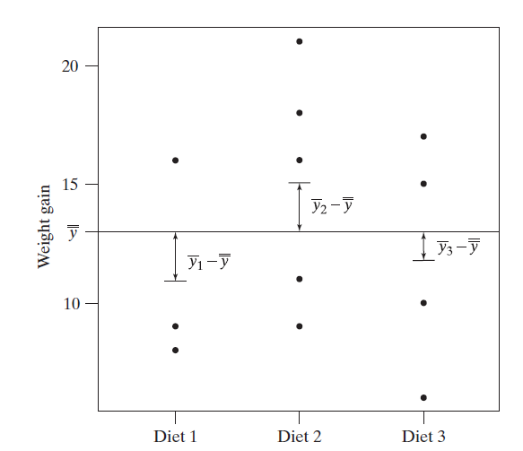
Representa la diferencia entre las medias de cada grupo o tratamiento con respcto a la media global.
ANOVA: Suma de cuadrados dentro de grupos
\[SS_{error}=\sum_{i=1}^{a} \sum_{j=1}^{n} (\bar{Y_{ij}} - \bar{Y_i})^2 \]

Representa el error aleatorio o variación residual.
ANOVA: Tabla ANOVA
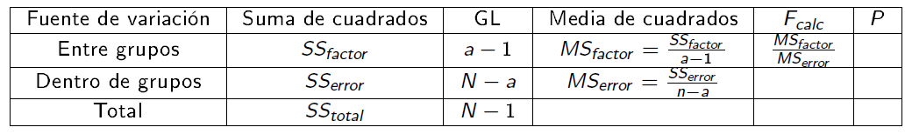
ANOVA: Tabla ANOVA
| Df | Sum Sq | Mean Sq | F value | Pr(>F) | |
|---|---|---|---|---|---|
| Tratamiento | 3 | 2433.516 | 811.172 | 825.329 | 0 |
| Residuals | 796 | 782.346 | 0.983 | NA | NA |
Comprobando Supuestos: Normalidad
Suponemos que los errores y las observaciones, dentro de cada grupo provienen de poblaciones con distribución normal.
\[H_o: \text{Los residuales están normalmente distribuidos.} \]
\[H_a: \text{Los residuales no están normalmente distribuidos.} \]
La idea es no rechazar \(H_o\) para asegurar el cumplimiento del supuesto.
Normalidad: Validación gráfica mediante histogramas
Los histogramas, de forma, exploratoria nos permite determinar simetría y modalidad en nuestros datos.
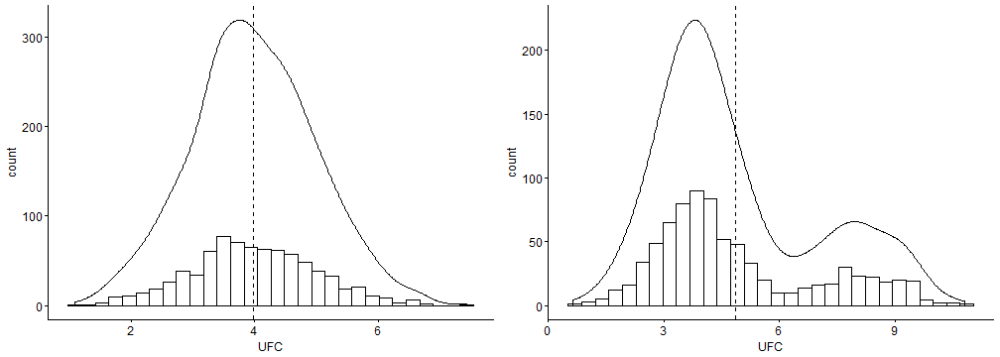
Normalidad: Validación gráfica mediante Q-Q plot
Los gráficos cuantil-cuantil o QQ plot, nos permite contrastar nuestros datos con una distribución normal teórica.
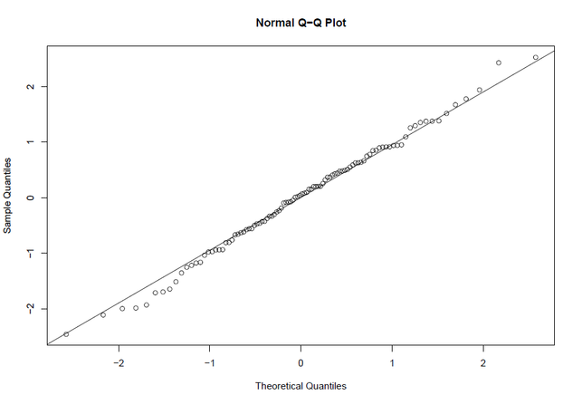
Normalidad: Validación gráfica mediante Q-Q plot
Los gráficos cuantil-cuantil o QQ plot, nos permite contrastar nuestros datos con una distribución normal teórica.
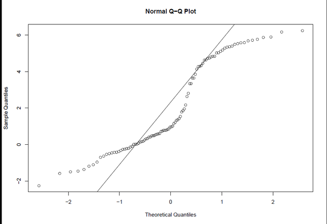
Normalidad: Validación mediante Pruebas
- Shapiro - Wilks -
shapiro.test()
residuos<-rnorm(100, mean = 5, sd = 3)
shapiro.test(residuos)
##
## Shapiro-Wilk normality test
##
## data: residuos
## W = 0.98958, p-value = 0.6309
Comprobando Supuestos: Homocedasticidad
Asumen que la varianza en la variable respuesta es la misma en cada nivel, o combinación de los niveles del factor o factores.
\[H_o: \text{La varianza de $Y$ es igual en cada nivel del factor} \]
\[H_a: \text{La varianza de $Y$ no es igual en cada nivel del factor.} \]
La idea es no rechazar \(H_o\) para asegurar el cumplimiento del supuesto.
Homocedasticidad: Validación gráfica mediante Box-plot
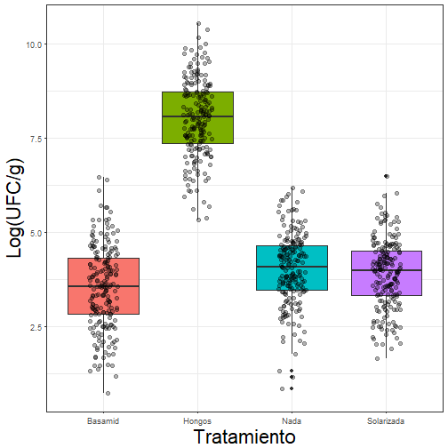
Homocedasticidad: Validación gráfica model-plot

Homocedasticidad: Validación mediante pruebas
Prueba de Bartlett - bartlett.test()
##
## Bartlett test of homogeneity of variances
##
## data: count by spray
## Bartlett's K-squared = 25.96, df = 5, p-value = 9.085e-05
##
## Bartlett test of homogeneity of variances
##
## data: conformity by fcategory
## Bartlett's K-squared = 0.33858, df = 2, p-value = 0.8443
Homocedasticidad: Validación mediante pruebas
Prueba de Levene - LeveneTest()
## Levene's Test for Homogeneity of Variance (center = median)
## Df F value Pr(>F)
## group 2 0.046 0.9551
## 42
## Levene's Test for Homogeneity of Variance (center = median)
## Df F value Pr(>F)
## group 5 1.4694 0.2219
## 39
## Levene's Test for Homogeneity of Variance (center = median)
## Df F value Pr(>F)
## group 5 1.4694 0.2219
## 39
Hay vida después de \(P < 0.05\)...
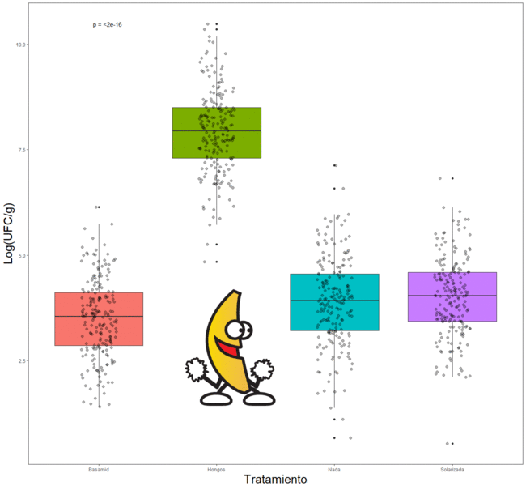
¿Y qué sigue ahora...?

Comparaciones múltiples
Un resultado significantivo en la ANOVA (F-test) nos dice que al menos una de las medias es diferente, pero no cual de ellas es la realmente distinta.
Por lo tanto, necesitamos una prueba que nos compare todas las muestras, estas son llamadas:
Comparaciones múltiples
.Número de comparaciones según los tratamientos:
\[{k \choose 2} = \frac{k!}{2! (k-2)!} = \frac{k(k-1)}{2} \]
Comparaciones múltiples
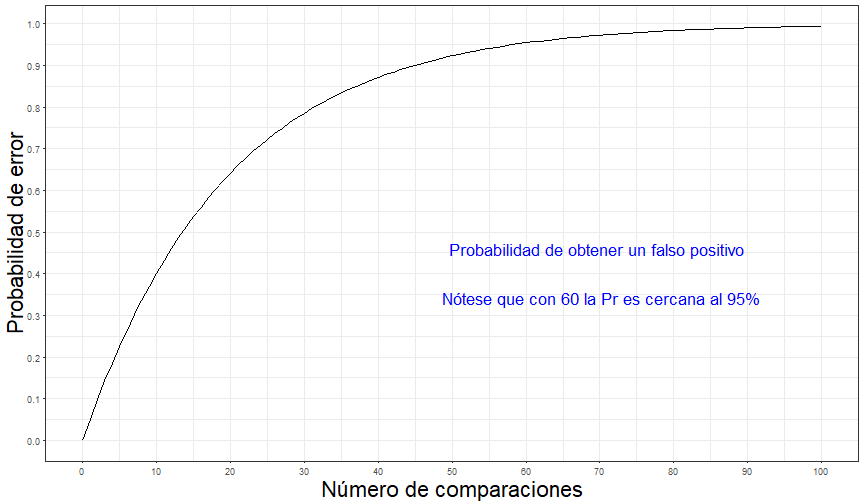
¿Cuál de las medias es diferente a el nivel de significancia usado ?
Prueba Honesta de Tukey - Tukey HSD
\[HSD = \frac{\bar{x_1} - \bar{x_2}}{\sqrt{\frac{MS_{Dentro}}{n}}}\]
Prueba Honesta de Tukey - Tukey HSD
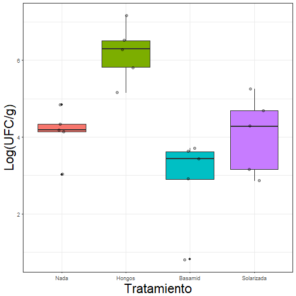
| Df | Sum Sq | Mean Sq | F value | Pr(>F) | |
|---|---|---|---|---|---|
| Tratamiento | 3 | 28.146 | 9.382 | 10.742 | 0 |
| Residuals | 16 | 13.974 | 0.873 | NA | NA |
Prueba Honesta de Tukey - Tukey HSD
| difference | pvalue | signif. | LCL | UCL | |
|---|---|---|---|---|---|
| Basamid - Hongos | -3.290 | 0.000 | *** | -4.981 | -1.599 |
| Basamid - Nada | -1.209 | 0.213 | -2.900 | 0.482 | |
| Basamid - Solarizada | -1.150 | 0.249 | -2.841 | 0.541 | |
| Hongos - Nada | 2.081 | 0.014 | * | 0.389 | 3.772 |
| Hongos - Solarizada | 2.139 | 0.011 | * | 0.448 | 3.830 |
| Nada - Solarizada | 0.059 | 1.000 | -1.632 | 1.750 |
Prueba de Dunnett
\[D_{Dunnett} = t_{Dunnett} \sqrt{\frac{MS_{error}}{n}}\]
Prueba de Dunnett
##
## Simultaneous Tests for General Linear Hypotheses
##
## Multiple Comparisons of Means: Dunnett Contrasts
##
##
## Fit: lm(formula = UFC ~ Tratamiento, data = wdata4)
##
## Linear Hypotheses:
## Estimate Std. Error t value Pr(>|t|)
## Hongos - Nada == 0 2.08052 0.59106 3.520 0.00763 **
## Basamid - Nada == 0 -1.20919 0.59106 -2.046 0.13825
## Solarizada - Nada == 0 -0.05889 0.59106 -0.100 0.99926
## ---
## Signif. codes: 0 '***' 0.001 '**' 0.01 '*' 0.05 '.' 0.1 ' ' 1
## (Adjusted p values reported -- single-step method)